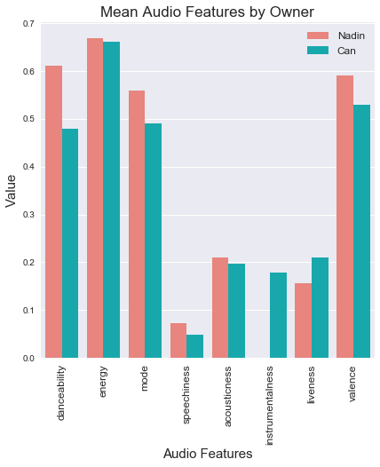

find me on the interwebs!

🌲 🌈 💻 ✨ 📚
Tools: Python, Spotify Web API, pandas, scikit-learn, seaborn, matplotlib | Source Code: GitHub
Spotify Audio Analysis is a project I developed in response to the release of "Your Top Songs 2017". Using the Spotify Web API, I extracted the audio features of my top songs as well as those of a friend. After that, I used the scikit-learn library to create models that predict which playlist a given song belongs to.
This project was a great way to get acquainted with working with datasets and Jupyter notebooks. I was absolutely fascinated by the way that Spotify songs included audio features like danceability or energy, and learned a lot about my own music taste in the process! My interest in Spotify tracks eventually led me to create multiple datasets of top Spotify tracks worldwide on Kaggle, available here: Top Spotify Tracks of 2017, Top Spotify Tracks of 2018, and Top Spotify Tracks of 2019.
Below is a visualization of the mean audio features of my and my friend's playlists:
find me on the interwebs!